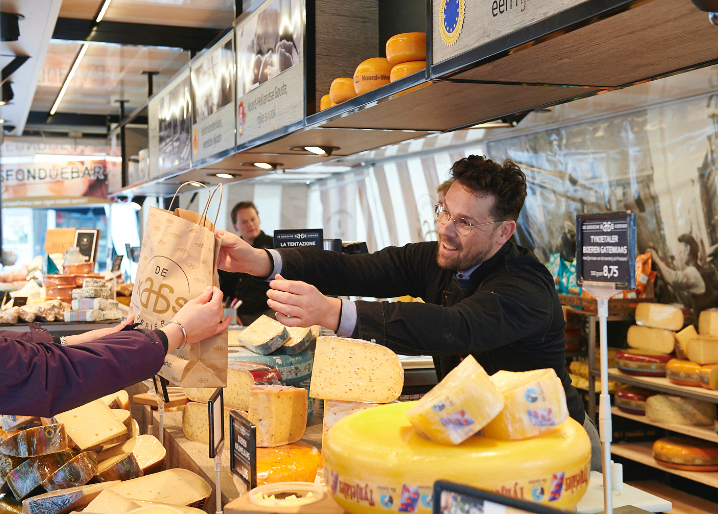

streekkaas
Noord-Hollandse kaas
100% Noord-Hollandse weidemelk, van historische grond met de smaak van traditie. Van jong en romig tot pittig overjarig.

Verschrikkelijk lekkere producten aanbieden waar niemand omheen kan, dat is onze kracht. We brengen meer smaak naar de markt en willen gewoon de beste zijn.
Het team van Rogier Roos van De Gooische Kaaskoerier is ook de drijvende kracht achter De Nijmeegse Kaaskoerier. De hele week sta je op de wijkmarkten van Nijmegen, van Hatert tot Kelfkensbos, met uitstapjes naar Doesburg en Zandvoort.
Verse kaas, vers gesneden, met persoonlijk advies. Een vertrouwd gezicht op de markt.
Bekijk de marktenOf je nu een heerlijk stuk Noord-Hollandse kaas zoekt, stoere ambachtelijke boerenkaas, milde geitenkaas of iets spannends uit het buitenland: bij De Nijmeegse Kaaskoerier vind je het beslist.
100% Noord-Hollandse weidemelk, van historische grond met de smaak van traditie. Van jong en romig tot pittig overjarig.

Op de boerderij gemaakt van rauwe melk. Stoer, vol en met echt karakter. Voor de liefhebber van een stevige kaas.

100% Nederlandse geitenmelk en Nederlands vakmanschap. Zacht, romig en verrassend veelzijdig.

Een wereldse selectie: Franse brie, pittige blauwader en bijzondere ontdekkingen. Onbegrensde variatie.
Loop deze week even langs bij De Nijmeegse Kaaskoerier voor een vers gesneden plakje en een goed advies.
Vind je kraam